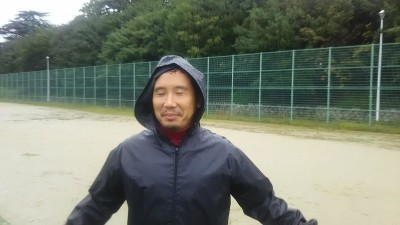
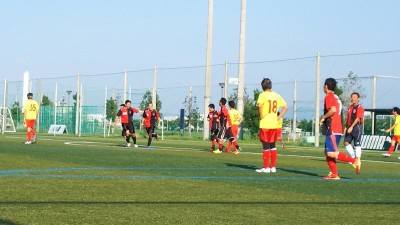
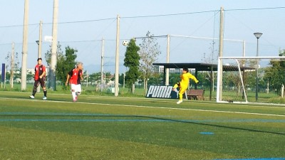
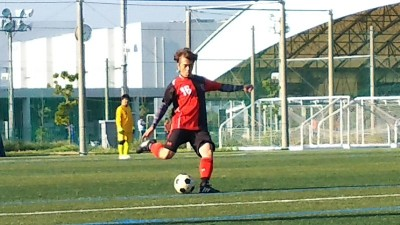

雨の中、参加された皆さんお疲れ様でした。
個人的にとても充実、そしてかなり楽しくやらせてもらいました！
楽しすぎただけに勝ちきりたかった…ってすごく思いました。
まっさんからの指摘がありましたように余裕を持って流し込むだけのシュートを外してしまいました。本当にすいませんでした！
あれを決めていればってすごい反省してます。次は決めれるように練習に励みます。
僕も試合の感想を少し…
マイボールの時間をもう少し長く続ければと思いました。縦に裏にの意識が強く攻撃が単調になってしまってたかなと。
相手さんが強いって聞いてましたのでディフェンスに人数をかけすぎてしまいました。
点を取らないと勝てないので行ける時に行くタイミングを感じ取らないとダメだなぁって自分の中での課題です。
またみんなで楽しく頑張って行きましょう！
日曜日の試合お疲れ様でした。
個人的には体調も良く、好調でしたので期待してたのですが、テラさんとのコンビプレーで１点は取れたものの、あとは不発に終わりました。それでも、勝利に繋がる得点でしたので、嬉しく思います。テラさん、ナイスパシュートでした（笑）
今回のお相手は、以前対戦して厳しい戦いになると思っていたので、ある程度心構えして挑みました。結果4：2さんには1-0で勝ち、スナンジュさんには0-1で敗け。なかなか頑張ったんじゃないですか？1戦目にボランチ行ってから、以降は、ずっと前線でプレーさせてもらいました。前線から見て思ったのが、ディフェンス陣がかなり左右に振られながらもマークの受け渡しとか、シュートコースに体を張って防いだりとか、奮闘してたのが印象的でした。雨補正もあったけど、みんな格好良かったですよ！
試合の感想
もう少しポゼッションを上げられるように、見方ボールのときは常に近い人がフォローへ行き、パスコースを1つでも多く作ってあげるように意識し、バックラインでも中盤でもボールを回せるようになれば、相手の攻撃回数も減らせるので、少しは楽に戦えるのかなと感じました。私もパスをもらったらすぐに仕掛ける癖があるので、見方全体のバランスを考えながらやって行こうと思いました。
これからも１戦１戦、大事に、そして楽しく一緒に頑張りましょう♪
私自身もスナンジュ6番さんに完璧に押さえ込まれているので、勝てるように頑張ります。
昨日は雨のなかみなさんお疲れ様でした。
ここ2試合ぐらいは優勢な内容で僕は後ろで観戦モードになってカウンター食らってポジショニング間に合わずいらん得点を献上しておりもやもやした日々を過ごしていました。
しかーし昨日はボールにさわれる機会が沢山ありお腹一杯になりました。
といっても一方的に攻められ続けたわけでもなく以前久宝寺でやったときはボコられたチームさん相手に崩してチャンスも沢山あり何より全員がディフェンスも最後まで集中力切らさなかったおかげて1失点で終えることができました。
個人的にはマッサンがピッチから消えていたのも気付かないほど集中してたのとマッサンご指摘のパンチングしたあとまた自分でキャッチしにいってエリア越えてたのは、あげてくれたYouTubeで動かぬ証拠として残っていました。あれはゴールキーパー版神の手なんです。
とにかく楽しいかったです。
久しぶりに全身筋肉痛になりましたがこの余韻をおかずにまた１週間頑張れそうです。
あと試合前にアップでシュート打ってもらえたのは良かったです。ファーストタッチが試合中だとやはり反応がにぶかったりミスする確率も高いのでやはりキーパーは試合前でも汗かいてユニフォーム汚しておく方がいいですね。

おお、さっすがつよぽん先にカキコサンキュー。
雨雨降れ降れもっと降れ～♪、最初はましでしたが昼に近づいていくと少し強まってきましたね。そんな中でも合計１７名の参加がありました。
お招き頂いた４：２さん、対戦して頂いたスナンジュさん、ありがとうございました。悪天候ながらも楽しい時間を過ごせました。今後ともよろしくお願い致します。
さて、試合ごとにまた振り返って行きますが、僕は途中でポンコツになったので不完全燃焼なんで、あんま覚えてないので追記はトシキに任せるわ。
１本目は４：２さんとでした。僕はアップつもりで軽めでと思ってましたが、相手の短パン番号１３番がワントップというか攻めゾーンを縦横無尽に駆け巡っているのに対応で疲れ果てて、足にダメージおっちゃいました。トシキとのセンターバックで何とか防いだけど恐ろしかったなあ。
猛攻を食らいながらも縦パスやぶっちとかのサイドバックからの攻撃とかで攻めたりもしてましたね。
いつながらテラさんのオフサイドになったけど惜しい飛び出しもありました。
結構やばい状況で試合終了ギリギリで左サイドでテラさんがキープして、ちょっ遠目からシュート？パス？、ボールは右サイドに転がって行ってあーあっと思ったら、韋駄天タク僧がエイトマンのように逆サイドから上がってきて、そのまま無人のゴールへ入れてくれました。タクちゃんは何点目かな？得点×１０００円を忘年会とかで奢ってくれるみたいでありがたいなあ（笑）
２本目はスナンジュさんとでした。僕は左サイドで珍しく中に切れ込んでタクちゃんとの連携が上手く出来なかったのが残念。その３分後くらいにドリブルしてたら足から「プチ」っていう音が・・・、そのまま今日はお終いでしおた（涙）、RICE処置したりしたけど今でもまだ痛いっす。やっぱ１試合目のダメージがあかんかったなあ。
結果的にはうちの悪い癖？デフェンスラインでボールを回してたら取られて、ドリでかわされながらシュート打たれて失点しちゃいました。今日唯一の失点でしたね。まんちゃん、よく守ってくれてました。
その前にもうちはタクちゃんが中央でデフェンスと１対１、ボールを前に出してスピードで抜き去ってキーパーと１対１、顔を覆って天を見上げてたなあ（笑）
それ以上にクールポコったのはトシキやな、タクちゃんが右サイドからドリで切れ込んでキーパーと１対１、反対のサイドからトシキが来ているのを知ってて、ゆっくりしたいいボールをパス、ニヤッとしながら大きなストライドで三段跳びのような感じで余裕こいて無人のゴールへシュートって思ったら、キーパーが間に合ってファインセーブ食らってた、トシキは反省文２０００文字カキコするように。
後は右サイドでオカちゃんが頑張ってたけど、トシキの鬼パスに乙女チックな声で「むりやーん」とか言ってたなあ（笑）
あ、ちなみに休み組ではなかやんが何かのイメトレしてたけど、内容は？まっとん説明よろしく。
３本目は４：２さんでした。確信的遅刻のヤスさんが来て、トシキと２人で１試合目と同じ人の猛攻を頑張って防いでましたね。
でも一番奮闘してたのはまんちゃんかな？ゴール前のフリーキックやPKもあったし、ナイスパンチング後にボール追いかけてペナルティエリア超えて手で持ってたし（笑）。たぶん一番しんどい試合だったと思います。またご感想お待ちしてます。
つよぽんの左サイドのオーバーラップとか、まえちゃんお得意の逆向き股抜きが炸裂したりとうちもいい面もありましたね。双方ともに無得点でした。
時間のある方は第２掲示板を見てくださいね～。
４本目はスナンジュさんとでした。印象的だったのがむらっちが左サイドに鬼パスしてた、その相手が動きまくってへとへとのなかやん（笑）
まえちゃんのトリッキーなスルーパスに左ウイング気味に居たわだっちへ通って、惜しいシュートがありました。反対側からはタカさんのスピードに乗ったオーバーラップもありましたね。
トシキがスイーパー気味でバックすてました奮闘してました。もう僕の居場所は無いなあ、来週からトシッキーズにチーム名変更で僕は追放かあ（涙）
攻守一体で両チームとも無得点で結果的には負けちゃいましたね。
雨が強まってきたけど、あとうちだけ２試合１０分でエキシビジョンをしました。１本目は４：２さんとでしたが、つよぽんの中央からの惜しい強烈なシュートがありましたね。キーパーにファインセーブされました。
最後はスナンジュさんとでしたが、むらっちが中央過ぎた所から倒れながらサブマリンシュートを打ったり、まっとんが右サイドバックで奮闘してました。
そんな感じの一日でした。参加された皆さんお疲れさーん。肉離れっぽいんだけど来週には治るかな？しょぼぼーん。
画像は本日、唯一得点を決めたタクちゃんです。ん？なんか違和感が・・気のせいか（笑）
黄色のS２０００は駐車場出口でお金払うのに道路に金落としてた。係員がちょうど来て拾ってくれたけど、その後ろにいた僕は痛みとトイレ行きたいのとでかなりイラってきてた（笑）
本日は、参加された皆さん、雨の中大変お疲れ様でした。久しぶりにフルに参加でき、とても楽しい時間を過ごす事ができました。ヤスさんや、トシキのアドバイスをもらいながら、サッカーは、やっぱり楽しいナァーと、感じた１日でした。あまり参加できてないですが、またよろしくお願いします。
お疲れ様です。
日曜日の練習参加された方お疲れ様でした。
練習開始前にﾏｯｻﾝから集合時間についてのお説教があり、久々にﾋﾟﾘﾋﾟﾘﾑｰﾄﾞでの練習になりました。
そんなﾑｰﾄﾞを打開すべく浜さんから提案がありました。
ｴｶﾞﾘﾃﾒﾝﾊﾞｰ親睦会を兼ねた飲み会を、開催したいとのこと。
10月28日 土曜日 19時～
場所 京橋駅付近を予定
詳細(お店)など決定次第、アップしていきます。
質問などありましたら、浜さんにお問い合わせお願いします。(日曜の練習時にでも何でも聞いて下さい)
参加希望の方、練習時又はぐるすけのｺﾒﾝﾄ欄に回答お願いします。
一応、締切は22日の日曜日までに連絡が頂ければ、浜さんもお店を探して予約もしやすいと思います。
宜しくお願いします。
久々に暑かったなあ。でもいい風も吹いてBBQ日和だったのになあ・・・、もう企画せんわ（笑）、今後はゆっきーにバトンパス。
グランドは金曜日の雨の影響で結構ぬかるんでいたけど、グランド使用中止にならず一安心。
今日は体験参加さんを含めて１９名の参加がありました。参加された方には直接お願いしましたが、集合時間の厳守を再認識お願いします。特にグランドが取れた時の練習は短時間なので有意義に使いたいので、ご協力よろしくお願いします。
まあ、先日に一斉メールしたように結果的に最初から紅白戦をしました。１０対９でしたが、スパイクの予備を持ってきたので一名参加が出来たのが良かったかな（笑）
うーん、いろんなプレーがあったけど、僕は自己嫌悪だけしかなかったっす。狙いすましたシュートがポストにコーン、めちゃ後ろから全力で走ってきてゴールから３Mくらいの距離で真正面でボールに追いついたけど、ふらふらでまさかの痛恨の一撃でバー超えるし、やっぱり点取り屋ではないなあ。タクちゃんなみのスピードとテクがないとあかんなあ。（涙）
あとキーパーしたけどポジション取りが難しい、タクちゃんが真正面に来た時は殺されるって思って人生が走馬灯のように頭の中で浮かんだわ（笑）
タクちゃんと言えばPKの時の周囲のヤジに動揺されず、お見事やったね。蹴るギリギリで驚かせたまえちゃんがいっちゃん酷かったような気が（笑）
後は敵なのに味方のフリしてハマさんからボールを奪ってそのままシュートして外したドーナツ某は相変わらずコスイなあ、肋骨へし折ったろか。
まあ、それでもスルーパスやワンツーとか、サイドチェンジとかいろんないいプレーもあったりで、みなさん楽しめたのではないかと思います。フレンドリーマッチもいいんだけど、やっぱり勝ち負けが気にしたり、ムキになることもあるんで、紅白戦は楽しくていいなあって思います。
２２名以上の練習参加が理想だけど、それにはメンバーが増えないと厳しくて、そうなると僕じゃもう無理なんで、そろそろ解散総選挙でみんなで万歳してカリスマを選びましょか（笑）
そん時僕はマッカーサーのようにしようっと。
まあ、そんな感じの一日でちた。おちまい。
各自感想があれば良かったら書いてちょ。
昨日は朝早くからお疲れ様でした。
当日は家を５時４０分に出て１５分前に近くのセブンイレブンでおにぎりを食べていたら
少し遅刻してしまいました。申し訳ございません m(__)m
わだっちに指摘されて”わ！ばれた”って思い反省しております。
今回、J－Green堺で試合出来るなんてegalite FCに感謝です。ありがとうございます。
人工芝のグランドは初めてで、僕が若い時に長居競技場の第２グランドが精一杯でした。
今はそんなグランドもないですよね(笑)
試合に関しては、ＤＦ、ボランチ、ＦＷを１回ずつさせていただき色々な角度から
みなさんのプレーを見て勉強になり試合中にはヤスさんやむらっち、タカさん、たくちゃんに
指示をもらい少しはましなプレーができたのかなって感じました。
あ、誤解してますね～足ひっぱってますね(^^♪
試合中はテラさんの突破力やたくちゃんの瞬足、タカさんの安定したプレイは
egalite FCの強みですね。
４試合目ですがテラさんからサイコーなボールを頂いてゴールできたのは感激です。
ありがとうございます。
家に帰って嫁さんに話したんですけど何の反応もなくいつも通りに
”ほかの人に迷惑かけんときや～”って言われておしましでした。
女性って夢がないですよね ( 一一)
最後に まっさん、２つごめんなさい。
１つ目
４試合目ですが試合前に、たくちゃんが途中交代してくれると言っていただいたので
そのままＦＷに入らないといけないのかなって感じで交代しました。
全体が見れてなくてごめんなさい。ＤＦの方にもご迷惑おかけしました。
２つ目
５０００文字無理でした m(__)m
そんなこんな感じの自分ですがegalite FCで楽しくサッカーさせていただいております。
足手まといですが同学年のキングカズが引退するまで頑張ろうと思います。
（無理かもしれませんが・・・・・）
今後ともよろしくお願いいたします。
＊今回も、会社で仕事のふりして書いています。(^^)v
今日参加されました皆さん朝早くからお疲れ様でした。Jグリーンでゲームができるということで先週は『もーいーくつねーるーとJグリーン?』って感じでした。昨夜息子に一緒に行くか?ときいたら『おれ試合で何回も行ってるからええわ』だそうです。
もう一度いいますがＪグリーンは僕にとっては聖地なのです。
いざゲームに入ると朝イチにもかかわらずまた完璧なフルコートもものともせずみなさん攻撃守備とも縦横無尽で終始押しぎみの展開でした。
しかし僕は緊張してしまって最初の2本ぐらいは完全にまい上ってしまって不安定なプレーでした。スミマセン???
丁度我に帰ったころに試合終了。
いつもより時間が経つのが早く感じました。
高校球児で例えるならば初めての甲子園の初戦で何もできずにいつの間にかゲームセットであまり実感がわかなかったという感じでしょうか。
高校のときの花園でもあまり緊張しなかったんですが...
何かすぐ帰るのが嫌だったので隣のなでしこリーグバニーズ京都の試合前のゴールキーパー練習見てましたら職業にしている人に失礼ですが僕と背格好が変わらないぐらいなのにやっぱり上手いなーと思いました。
次に向けてモチベーション上がった。



ナンダカンダって歌があったなあ。ていうかＪ-グリーンの魔力は凄いね。早朝で遠方にもかかわらず１８名の参加って。
そんなグランドに合宿の貴重な対戦相手に選んで頂いた加賀田ＦＣさん、本当にありがとうございました。
個人的には寝不足、おなかの調子がとかで最低なパフォーマンスでしたが、結構初Ｊ－グリーンの方は躍動してたんじゃないでしょうか？
まあ、今日も得点シーンを中心にカキコしますが、休憩が５分でチーム編成とか仕切りとか審判してたら内容覚えとらんから、各自つけたしをよろしくっす。
２０分４本と最後に１０分１本の５本をしました。
１本目は全体的に攻めてた感じがしましたね。とくにむらっちが惜しいシーンが２回ほどありました。テラさんからのクロスをヘディングシュートがわずかにそれたり、おかちゃんからのクロスをインサイドで丁寧に行きすぎてトラップみたいな感じでキーパーに取られちゃったのがもったいなかった。タクちゃんも何時もながらのドリで惜しいシュートもありましたが、タクちゃんとトクさんのボランチコンビがいい動きしてたのと、右サイドバックしてたぶっちがいいボールコントロールをしてましたね。
初得点はうちでした、縦にはめっぽう強いテラさんが最初のシュートはキーパーのナイスセーブに阻まれましたが、右サイドからの縦パスでオフぎりぎりで相手チームもオフと思って動きが止まったのを見逃さず、そのままドリして見事にゴールを決めてくれました。
反対に１点取られたのは個人的に自己嫌悪。体が動かなかったのもあるけど、ずっと攻めてたんで、スイーパーの位置からダイブ前に出てて、その後ろに通されて、追い掛けながらまあ、ゴールまで相手がボール触ってからで大丈夫やろって思って余裕こいてたら、触った瞬間にミドルシュートされて、まんちゃんも前に出てたみたいで無人のゴールに決められちゃいました。反省。
２試合目は僕は主審でしたが、温厚なタカさんがプチお怒りモードが印象やったかな（笑）。
この試合はお互いに攻めたり攻められたりでしたね。
タクちゃんのサイドの高速ドリブルに外部の人が「早い、早い」って言ってたなあ。あとオカちゃんに切れてたっけ（笑）
うちの攻めてた流れは左サイドからわだっちがボールを奪って、逆サイドにパス、それを右サイドから駆け上がってきたぶっちがそのままダイレクトシュート、わずかにゴールにはならずでしたね。初試合はいかがでしたか？特にＪ－グリーンでね、よかったら感想お待ちしています。
サイド攻撃もいい感じでしたね。誰かわからんけどサイドから上げたクロスを中央に居たわだっちがちょっと見送る感じでもったいなかったっと思ってたら、ほっしゃんの右からのクロスに今度は丁寧にヘディングで合わせて美しいゴールを決めてくれました。わだっちには今季初ゴール？ぜひＫさん宛にゴールを決める喜びのコメントをお願いします。（笑）
画像はおそらくわだっちの得点後の様子だと思います。ぶっちの息子、グッジョブ。
あとはトシキのフリーキックも惜しかったですね。
反対に１本目同様、思いっきりカウンターくらって、決められちゃいましたがやっぱり僕がよくスイーパー行く理由として、４バックでもカバーする意識が足りなかったり、マークをクロスする動きがないと裏を取られて全員ＯＵＴだと、キーパーが大変なのでそのあたりは今後僕も含めて意識を持っていきましょう。
３本目は一進一退が続きましたね。相手のデフェンスラインが高いのでワントップしてた時は結構オフサイドに掛かったなあ（涙）、欲しいタイミングが合わないと全部やられちゃいましたね。
あげくの果てにはタカさんからのパスを斜めに動いてもらおうとしたらオフサイドになってて、その僕をおとりにタカさんがそのままドリブリで持ち込んで惜しいシュート「ナイスおとり」って（笑）
後はよっしゃあって思って、勝負と思ってたら逆サイドからトシキが「まっさーん」て呼ぶから出した後に、ポカした時はほんまスーパーカップバニラ１００個の刑にしてやろうかと思ったわ（笑）
でも連続でコーナーとかあったりしたし、いい感じでしたが双方無得点でした。
４本目はまえちゃんからのスルーパスを予測して大回りに動いてたタクちゃんにいいボールが渡って、そのまま右サイドネットに決まったけど惜しくもオフサイド。同じように左側からドリしてたタクちゃんがシュート、キーパーがファンブル、ハイエナむらっちが中央からごっつあんクラッシュで１点決まりました。
あとは左コーナー側からのクロスのこぼれ浮き球を右サイドンい居たほっしゃんがそのままダイレクトループボレー、右のゴールポストに直撃、惜しかったっすね。それ以外にもいいシュートを打ってました。
あとのもう１点はテラさんからの縦パスをとくさんがいい感じで受けて角度の無い所からシュートを決めてくれました。初ゴールですね、感想を５０００文字以上でお願いします（笑）。ただね、僕の右サイドバックとトクさんは変わったはずなのになぜにずっとトップ？やったんだろう？誰かと交代かなって思ってたけど、結局はトシキとかが右サイドもカバーしてたような気が（笑）
５本目は、なーんも覚えとらん。得点は両方ともに入らずでした。
まあ、そんな感じでした。カキコお願いした人以外でも初Ｊ－グリーンの人、僕のカキコに漏れてるいいプレーやおもろいプレーを覚えている人とかあればぜひカキコしてくださいね。
僕は予定通り、夕方まで爆睡でした。本日参加された皆さんお疲れ様でした。
しゃす。